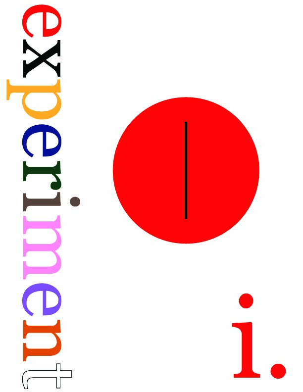
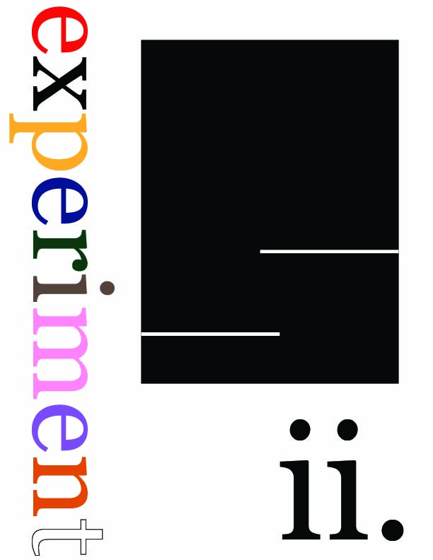
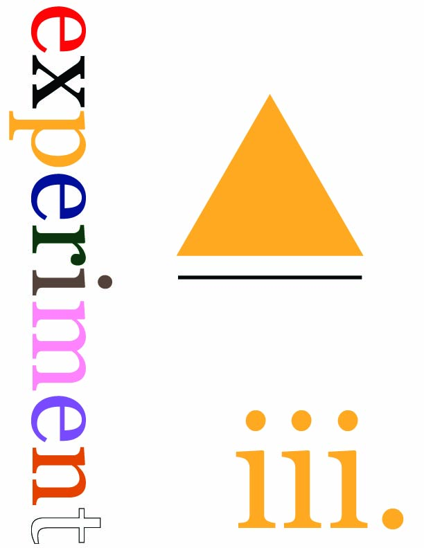
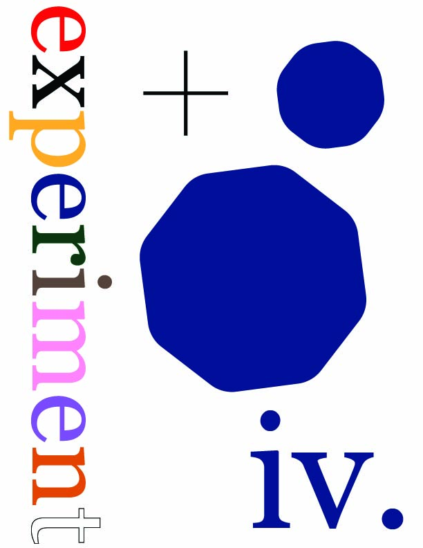
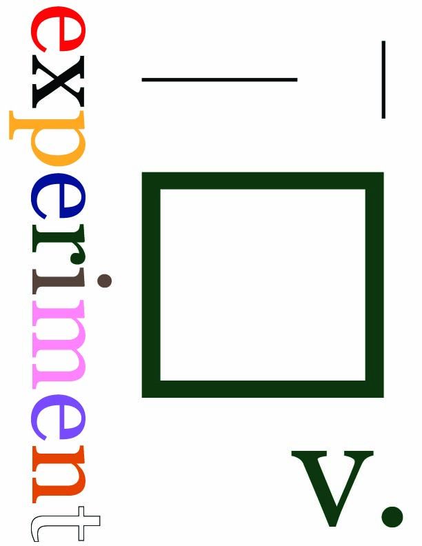
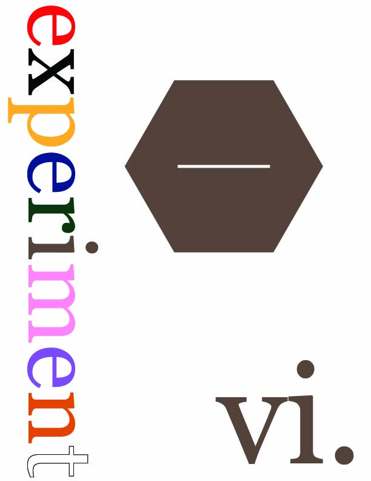
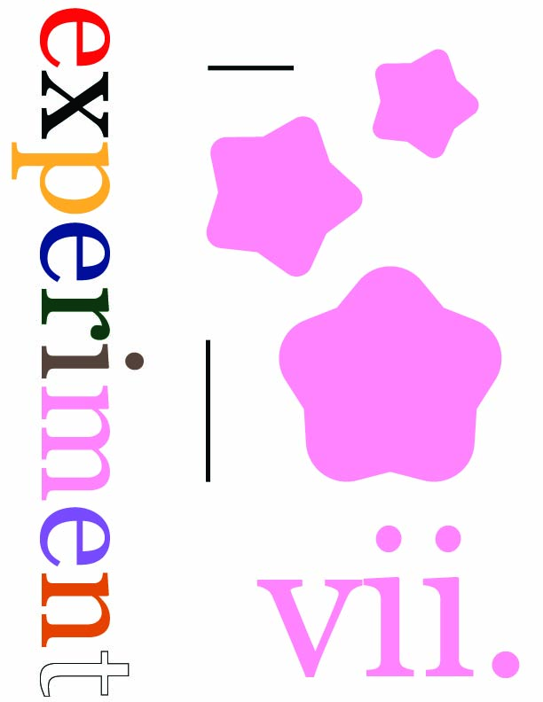
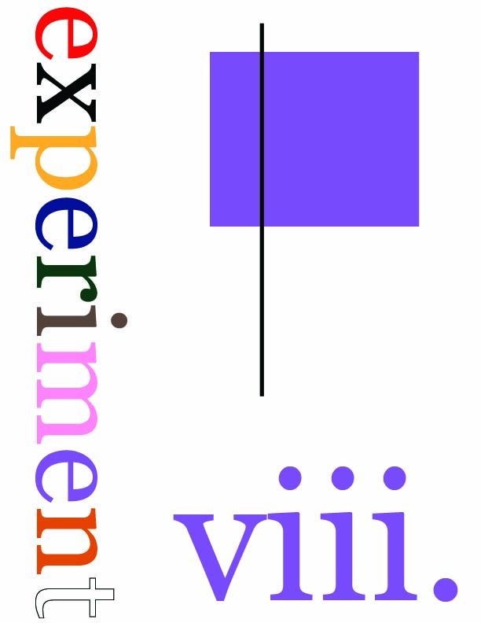
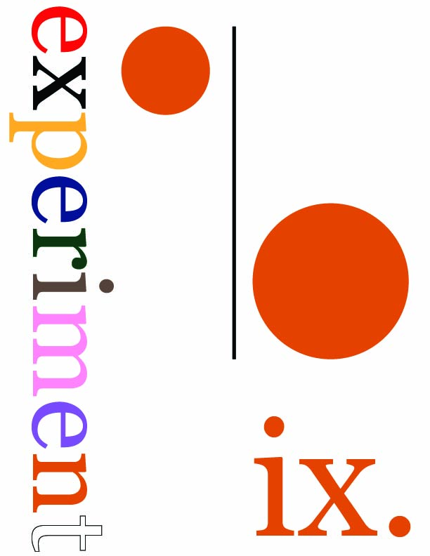
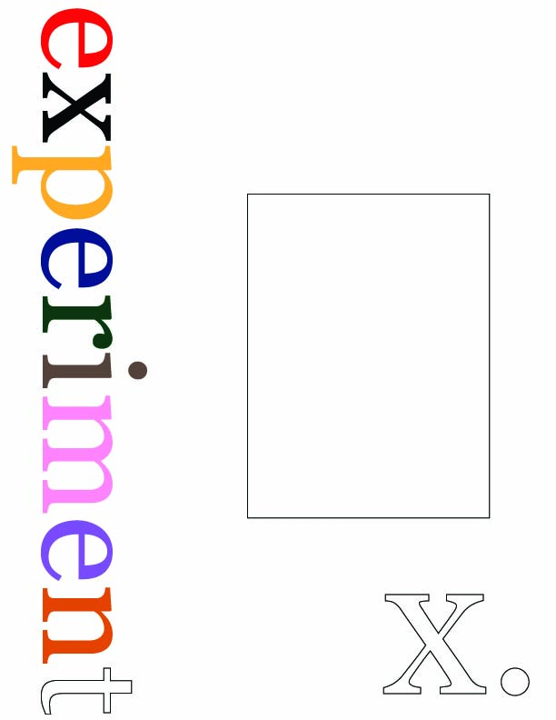

Mateo Van Thienen
experiment: (noun) a procedure, especially in a laboratory, to determine something.
"experiment" busca unir el movimiento del cuerpo con la poesía y el dibujo a través del video arte para experimentar con diferentes temas de relevancia. cada video en esta serie de diez videos experimenta a través de la lente de un color distinto. son diez videos, son diez las letras en la palabra "experiment". son diez videos en un ciclo de experimentación introspectiva hacia mi propio cuerpo físico y hacia nuestro cuerpo colectivo. diez videos que, en su totalidad, culminan un ciclo de transformación y manifestación.
________________________________
experiment i
experiment i está enmarcado por el color rojo. color de la pasión, del amor, de la comida. fruta, piel, miradas, intensidad. el ocio. la lujuria.
Locación: Chacarita, Buenos Aires
Duración: 3' 8"
Fecha: 20 de Noviembre de 2022
Ficha técnica: Formato digital, color, videodanza experimental, corto experimental

________________________________
experiment ii
experiment ii atraviesa el color negro. la oscuridad de un audio grabado durante un ataque de ansiedad se ilumina con movimientos libres de un cuerpo poseído por su mente.
Locación: Palermo, Buenos Aires
Duración: 21' 14"
Fecha: 8 de Noviembre de 2023
Ficha técnica: Formato digital, color, videodanza experimental

________________________________
experiment iii
experiment iii ahonda sobre los sentimientos de un día soleado de primavera, cuando el cielo despejado y la luz amarilla del sol iluminan y enternecen la realidad. el amarillo presente por toda la ciudad hace referencia a las energías de la vida y la alegría.
Locación: Palermo, Buenos Aires
Duración: 3' 16"
Fecha: 3 de Diciembre de 2023
Ficha técnica: Formato digital, color, videodanza experimental

________________________________
experiment iv
experiment iv explora las profundidades del color azul. color del agua, de la vida, de lo fluído. un poema sobre el color azul acompaña movimientos subacuáticos de un cuerpo humano.
Locación: Tulum, México
Duración: 2' 9"
Fecha: 27 de Febrero de 2024
Ficha técnica: Formato digital, color, videodanza experimental, videopoesía experimental

________________________________
experiment v
experiment v respira el color verde. color de la naturaleza, de la serenidad. un audio de whatsapp acompaña escenas de la selva tropical y poses de yoga en playas paradisíacas.
Locación: Santa Teresa, Costa Rica
Duración: 4' 54"
Fecha: 18 de Marzo de 2024
Ficha técnica: Formato digital, color, corto experimental

________________________________
experiment vi
experiment vi se ensucia, se mancha, se enferma. el marrón de la tierra y el marrón de las pieles se fusionan en un caleidoscopio intenso.
Locación: Palermo, Buenos Aires
Duración: 6' 38"
Fecha: 26 de Agosto de 2024
Ficha técnica: Formato digital, color, videoarte experimental

________________________________
experiment vii
experiment vii experimenta con el color rosa para explorar la definición de masculinidad a través de un color históricamente asociado a lo femenino. ¿existe la ternura masculina?
Locación: Palermo, Buenos Aires
Duración: 6' 38"
Fecha: 9 de Septiembre de 2024
Ficha técnica: Formato digital, color, videoarte experimental

________________________________
experiment viii
experiment viii experimenta con el color violeta. experiment en desarrollo.
Locación: Weston, Florida
Duración:
Fecha:
Ficha técnica: Formato digital, color, video ilustración sobre danza experimental

________________________________
experiment ix
experiment ix experimenta con el color naranja. experiment en desarrollo.
Locación:
Duración:
Fecha:
Ficha técnica:

________________________________
experiment x
experiment x experimenta con el color blanco. experiment en desarrollo.
Locación:
Duración:
Fecha:
Ficha técnica:

Diseñado con bootstrap por Mateo Van Thienen, 2024.